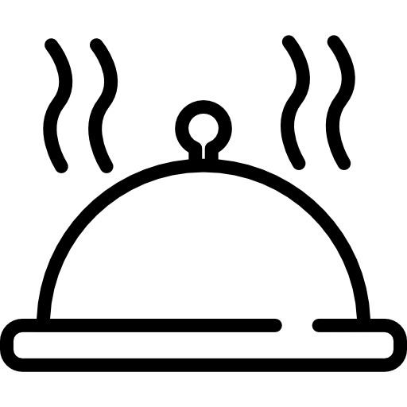

Magical atmosphere
The restaurant is located in the Club House. A spacious hall,
European interior style, light colors of furniture, panoramic
windows with a view of the picturesque lake - all this gives
guests a feeling of freedom and lightness.
The main hall of the restaurant is decorated discreetly and elegantly.
In the center is an original fireplace that is lit in the evenings.
Any event can be decently organized here: a business meeting, a romantic date,
a corporate banquet, a wedding ceremony, a family holiday or a child's birthday.
The best quality of food
The author's menu of Chef, is diverse and rich in classic dishes from all over the world.
And his own characteristic interpretation of the best recipes and unique presentation of
dishes turn traditional cuisine into a work of art.
Useful and nutritious Italian cuisine, exquisite dishes, prepared with special French
thoroughness and attention to detail, are the basis of the author's approach of
"Contemporary Kitchen" by Volodymyr Yaroslavskyi.
A large selection of dishes and drinks
The concept of Ukrainian cuisine is to present the freshest products
through the art of European gastronomy.
The restaurant's menu includes dishes from Ukrainian and Ukrainian cuisine,
a grill menu, vegetarian dishes, and exquisite European desserts.
For little gourmets - a separate children's menu. In the courtyard in
the summer season, there is a special menu with elements of steet food, with democratic prices.
The menu is accompanied by a large wine list.